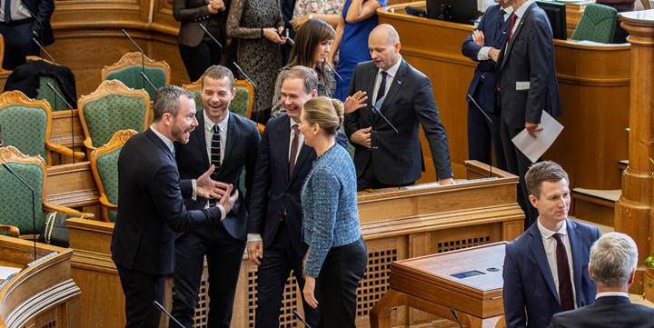
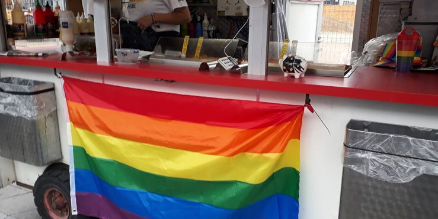

Fakta-ark 10: Ligestilling
Áudio
sidde 57
Fakta-ark 10: Ligestilling
Læremateriale Til Medborgerskabsprøven
sidde 58
Ligebehandling og ligestilling betyder, at alle borgere uanset fx køn, etnisk oprin delse eller religion skal behandles lige. Hvis man bliver forskelsbehandlet, uden der er nogen saglig grund til det, vil der i nogle situationer være tale om ulovlig forskelsbehandling, eksempelvis hvis man fravælges til et bestemt job på grund af sit køn eller religion. Man kan blive straffet for at forskelsbehandle.
Læremateriale Til Medborgerskabsprøven Fakta-Ark 10: Ligestilling
Dette fakta-ark handler om reglerne for ligebehandling inden for: • Arbejdsmarked og uddannelse • Det politiske liv • Privatlivet
Arbejdsmarked Og Uddannelse
På det danske arbejdsmarked gælder der et forbud mod forskelsbehandling. På det danske arbejdsmarked må man således ikke forskelsbehandle på grund af:
- Køn
- Race
- Hudfarve
- Religion eller tro
- Politisk anskuelse*
- Seksuel orientering
- Alder
- Handicap
- National, social eller etnisk baggrund*
En arbejdsgiver må derfor ikke som udgangspunkt afvise at ansætte personer på grund af fx køn, handicap eller etnisk baggrund. I særlige tilfælde må arbejdsgi veren stille krav* til påklædningen, fx at man har noget bestemt tøj på af hensyn til hygiejne og sikkerhed på arbejdspladsen.
Reglerne for ligebehandling gælder også, når man er blevet ansat på en arbejds plads. Arbejdsgiveren må fx ikke fyre en person på grund af personens etniske baggrund* eller give en person mindre i løn på grund af køn. En arbejdsgiver må heller ikke undlade at forfremme* en person på grund af fx personens seksuelle orientering, handicap eller alder.
Ifølge lov om ligeløn har mænd og kvinder krav på samme løn for samme arbejde.
Ligestilling gælder også inden for uddannelsesområdet. Alle har lige adgang til uddannelsessystemet. Hvis man ønsker at tage en bestemt uddannelse, har man ret til at søge om optagelse på det relevante* studium, uanset ens baggrund.
Og det samme gælder, hvis en person i forbindelse med sin erhvervsfaglige uddannelse ønsker at få en praktikplads. En arbejdsplads må ikke nægte at give

sidde 59
DET POLITISKE LIVFolketinget. Foto: Statsministeriet.
vedkommende en praktikplads på grund af vedkommendes køn, religion eller etniske oprindelse.
Læremateriale Til Medborgerskabsprøven Fakta-Ark 10: Ligestilling
Også uden for arbejdsmarkedet gælder der regler om, at man ikke må blive forskelsbehandlet på grund af fx køn, race eller etnicitet.
Hvis man oplever forskelsbehandling på grund af fx køn eller etnisk oprindelse i strid med loven, kan man klage til Ligebehandlingsnævnet. Det er gratis at klage.
Folketinget. Foto: Statsministeriet.
Det er et helt centralt princip i det danske demokrati, at borgere ikke må forhin dres i at stemme til valg eller at stille op til valg på grund af fx deres køn, etniske baggrund, seksuelle orientering eller religion.
Danmark fik sin første frie forfatning i 1849, da Danmarks Riges Grundlov blev underskrevet. Men det betød ikke, at alle fik stemmeret. Kvinder fik fx ikke stem meret.
Kvinders ret til at stemme til den lovgivende forsamling blev indført i 1915, da man ændrede grundloven.
I dag er det almindeligt med kvindelige ministre og borgmestre, og 86 ud af 179 medlemmer (48 procent) af det danske Folketing er kvinder.
Kvinder og mænd har således samme politiske rettigheder og kan stemme og stille op til folketingsvalg og kommunalvalg på samme vilkår*. Kvinder og mænd har også samme ret til at deltage i den offentlige debat og til at være medlem af politiske partier.
Den første kvindelige minister i Danmark var Nina Bang, som blev undervis ningsminister i 1924, og i 2011 fik Danmark sin første kvindelige statsminister, Helle Thorning-Schmidt.

sidde 60
Privat- Og Familielivet
Læremateriale Til Medborgerskabsprøven Fakta-Ark 10: Ligestilling
Ligestilling gælder også i privat- og familielivet. Mænd og kvinder er lige meget værd og skal have lige muligheder for at leve det liv, de ønsker, og samme ret til at træffe beslutninger om eget liv.
Uanset om man er mand eller kvinde, har man i Danmark ret til selv at bestemme, hvem man vil giftes med. Ægteskabet er et ligeværdigt partnerskab, og mænd og kvinder har derfor lige rettigheder i et ægteskab. Både mænd og kvinder bestemmer over sig selv, selvom de er gift. Det betyder for eksempel, at enhver selv må bestemme, hvad man laver i løbet af en dag, hvilket tøj man har på, og hvem man mødes med. Man har dog også forpligtelser over for hinanden i et ægteskab. Begge ægtefæller har for eksempel pligt til at forsørge hinanden og deres børn.
Både kvinder og mænd har ret til at blive skilt – uanset om ægtefællen også ønsker at blive skilt eller ej. Hvis et ægtepar med børn bliver skilt, er det normalt sådan, at forældrene beholder den fælles forældremyndighed*.
Fælles forældremyndighed betyder, at forældrene sammen skal sørge for barnet og være enige om vigtige beslutninger om barnet som for eksempel barnets navn, religion og skole.
Par af samme køn har ret til at gifte sig, og de har ret til at adoptere børn på samme vilkår som par af forskelligt køn.Regnbueflaget er et symbol for LGBT+-perso
Alle over 18 år har også ret til at bestemme over sine egne penge, og den løn, man tjener, er ens egne penge, uanset om man er kvinde eller mand.
I Danmark har piger og drenge samme rettigheder og skal have samme mulig heder i livet. Det betyder, at piger og drenge har ret til samme frihed, ansvar, omsorg, pligter og muligheder. Både piger og drenge skal have lige muligheder for at leve det liv, de selv ønsker, og har derfor lige ret til at vælge, hvilken uddan nelse de vil have, hvad de vil arbejde med, og hvem de vil giftes med.
Regnbueflaget er et symbol for LGBT+-personer.
Fonte: Læremateriale til Medborgerskabsprøven, SIRI.